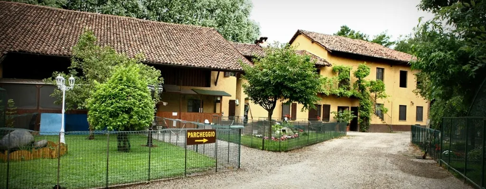
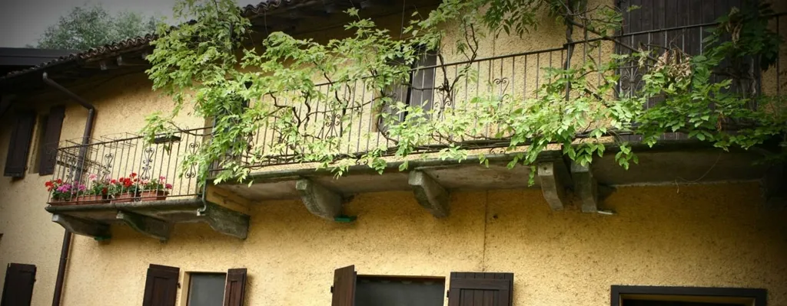

Vigevano · a due passi dal Parco del Ticino
Un'oasi naturale nel cuore della Lomellina
Cucina della tradizione lombarda con i prodotti della nostra azienda agricola, e un parco dove grandi e piccoli incontrano da vicino i nostri animali.
Sabato, domenica e festivi a pranzo dalle 12:45 · cena venerdì, sabato e domenica · chiuso lunedì e martedì

La nostra storia
Dal 1988 una cascina, dal 1999 la vostra tavola
L'azienda agricola nasce nel 1988. Il 15 novembre 1999 apriamo l'agriturismo: un locale accogliente con una cucina creativa ma fedele al territorio.
Alleviamo bovini, suini, avicoli e selvaggina, e su un ettaro di terra coltiviamo ortaggi, piccoli frutti, erbe officinali e fiori. In tavola portiamo solo quello che la stagione offre.

La cucina
I sapori di casa, dalla nostra terra
Antipasti con i salumi di nostra produzione, risotti, paste e dolci fatti in casa, accompagnati dai vini dell'Oltrepò Pavese. Il menù cambia con le stagioni.
L'oasi
Un parco dove incontrare i nostri animali
Daini, cigni neri, una zebra, un cammello, asinelli, cicogne e tanti altri amici vivono nell'oasi della cascina. Un pranzo qui diventa una giornata all'aria aperta.
Ogni sabato e domenica · 10:00–14:00
Formula "Ape-Nature": visita e aperitivo
Visita agli animali, accesso libero all'oasi e alle aree gioco, poi l'aperitivo sotto il gazebo: un calice o una birra artigianale con tagliere, bruschette e pizza per i grandi; focaccina, bibita e un dolce o gelato per i bambini.
- Adulti
- 16 €
- Bambini fino a 11 anni
- 12 €
Feste e cerimonie
I vostri giorni speciali, in mezzo al verde


Dove siamo
Vieni a trovarci
- Indirizzo
- Strada Cascina Guardia 78
27029 Vigevano (PV) - Prenotazioni (solo telefono o WhatsApp)
- 348 29 21 234 · WhatsApp
- Altro numero
- 339 783 4937
Da Vigevano centro: corso Novara in direzione Novara, poi verso Mortara fino alla rotatoria del supermercato Carrefour.
La mappa di Google si carica solo se la apri.